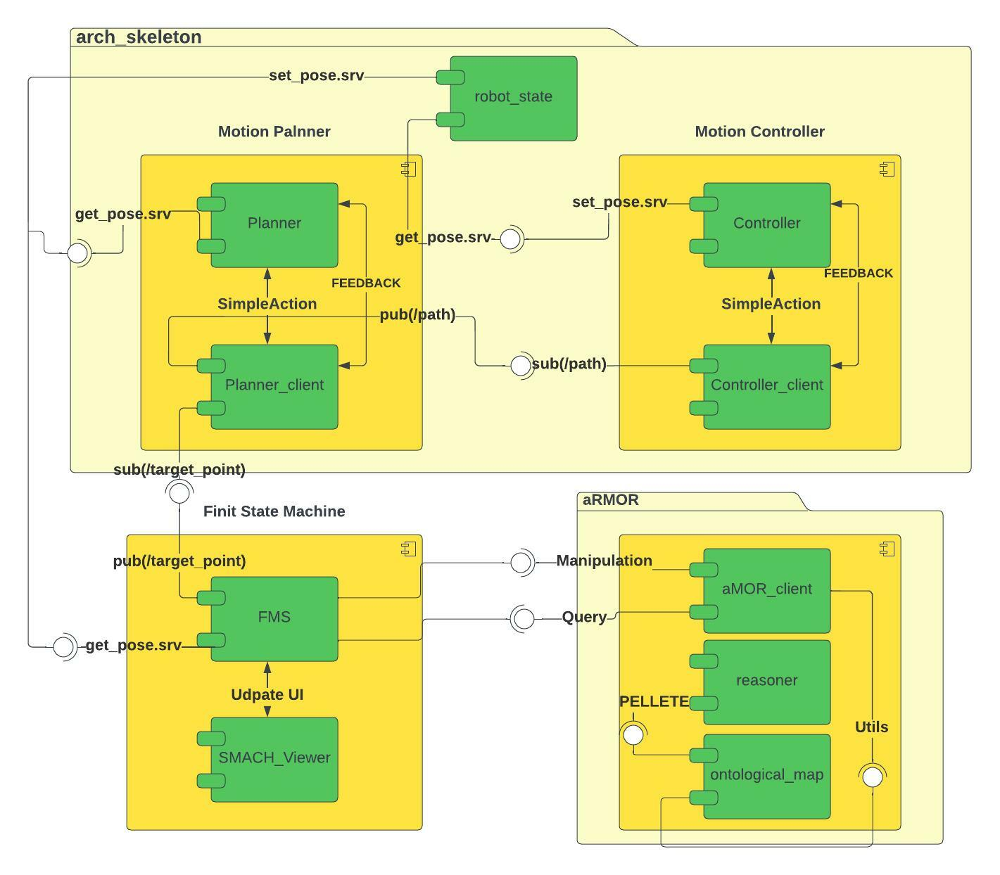

UML graph
{kind=link}
- The software structure is divided into 5 important parts:
Robot state
Motion Controller
Motion Planner
aRMOR
Finite state machine
1. Robot state node
Consisting of a node that allows the client to use the GET_POSE and SET_POSE service and communicate with other nodes.
2. Motion Controller
It is built by two controller_client and controller nodes to move the robot between different locations.
3. Motion Planner
It is built by two planner_client and planner nodes to generate a map of points to switch from one room to another (points are defined inside the map / see map section).
4. aRMOR
- Armor package is built from 6 nodes which allows me to do:
Manipulation in ontology map
Query from ontology map
Exception on ontology map
Architecture name mapper for each node via name_tag
For more information on armor package then refer to this link.
5. Finite state machine
Inside this node, most of the functions have been defined and it allows me to view the robot status via GUI SMACH viewer